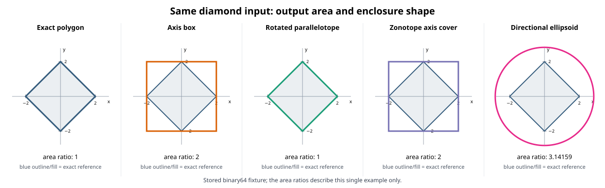

One stored-binary64 diamond input, with exact polygon, axis box, rotated parallelotope, zonotope axis cover, and directional ellipsoid outputs.
Scope: this single-fixture geometry pilot gives no general approximation guarantee or performance winner. Areas and ratios are specific to this diamond. Call timings use different API paths and are descriptive only; no source-mapped limiter profile was collected.

Times are the median and range of seven interleaved single calls per method, after one excluded warmup. Units are nanoseconds. Workspace/preparation is included inside each registered approximation call; input construction and validation are outside the timer. The QuickHull method times its public function only.
| Method | Median (ns) | Range (ns) | Area | Area ratio | Evidence accepted |
|---|---|---|---|---|---|
| exact-polygon-quickhull | 4,750 | 4,749–4,889 | 8 | 1 | exact-literal-hull |
| axis-box | 12,991 | 12,083–14,597 | 16 | 2 | exact-v-h-containment |
| rotated-parallelotope | 21,023 | 20,883–23,327 | 8 | 1 | exact-v-h-containment |
| zonotope-axis-cover | 14,876 | 13,829–16,273 | 16 | 2 | exact-generator-axis-cover |
| directional-ellipsoid | 17,042 | 16,133–18,090 | 25.1327412287183 | 3.14159265358979 | exact-dyadic-v-ellipsoid-check |
Release build, compiler, host snapshots, executable hash, and smoke output are in this directory. Raw per-call rows are in raw-rows.jsonl; the table is in summary.csv. Rebuild with the CMake project under benchmarks/reporting/approximation_pilot/ and regenerate with its summarize.py.
Source commit: 4494557aad4710fe1166b5a681057f106ef8fb91. This is preliminary evidence, not a registered comparison-program result and not a Pages publication.